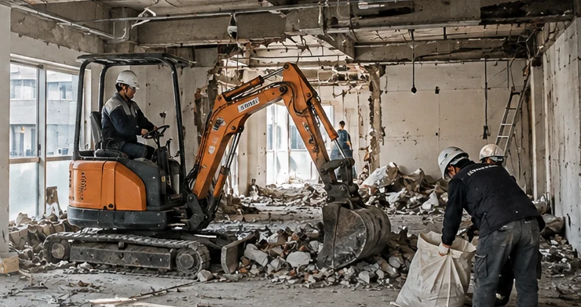
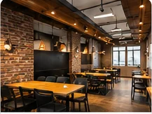
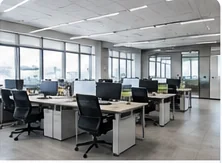
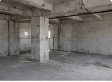
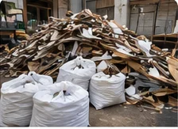

실제 시공 사례 01
시공 전

시공 후

성북구 점포철거 · 원상복구 안내
성북구에서 폐업철거 또는 상가 원상복구를 준비하고 계신다면 점포리턴에 철거 범위와 공사 일정을 상담해 보세요. 점포 내부시설, 바닥과 천장 마감재, 간판, 폐기물 반출 조건 등을 살펴 사업장 상황에 맞는 철거 견적을 안내합니다. 임대차계약 종료를 앞둔 점포부터 일부 시설만 철거해야 하는 매장까지 필요한 작업 범위를 함께 검토할 수 있습니다.
상담 내용과 현장 조건에 따라 견적 및 공사 일정은 달라질 수 있습니다.

OUR SERVICES
상가를 비울 때 모든 시설을 철거해야 하는 것은 아닙니다. 기존에 설치한 마감재와 설비 중 제거해야 할 항목, 임대인과 협의해 유지할 항목을 구분하면 공사 범위를 구체적으로 정할 수 있습니다. 점포리턴은 현재 시설 상태와 반환 조건을 바탕으로 필요한 철거 작업을 상담합니다.
식당이나 카페는 조리대, 주방 집기, 배기 덕트, 배관과 바닥 마감재 등 철거 대상이 다양합니다. 학원과 사무실은 강의실이나 업무공간을 나누는 가벽, 출입문, 천장 마감재, 조명 및 전기설비 등이 작업 범위에 포함될 수 있습니다.
일반 매장과 소규모 상업시설도 진열장, 카운터, 간판, 내부 마감재의 철거 여부에 따라 필요한 공사가 달라집니다. 설비마다 분리·철거 방법이 다를 수 있으므로 점포리턴과 상담하면서 실제 제거 범위를 구분해 보세요.




※ 위 서비스 이미지는 이해를 돕기 위해 생성한 참고 이미지이며, 점포리턴의 실제 시공 사진이 아닙니다.
SEONGBUK AREA
성북구의 상가 철거는 점포 면적뿐 아니라 건물 구조와 주변 접근 조건을 함께 살펴야 합니다. 성신여대입구역 주변의 골목형 점포라면 철거 차량이 정차할 수 있는 위치와 보행 통로를 확인해야 합니다. 길음동, 월곡동, 장위동 등의 상가건물에서는 공용 승강기 사용 가능 여부와 관리규정이 작업 일정에 영향을 줄 수 있습니다.
정릉동이나 석관동 등에서도 계단을 통한 폐기물 반출이 필요한지, 작업 차량의 접근이 가능한지에 따라 견적 조건이 달라집니다. 같은 성북구 안에서도 건물마다 조건이 다르므로 정확한 사업장 위치와 층수, 출입구 상황을 알려주시면 해당 현장의 제약사항을 상담할 수 있습니다.
RESTORATION PLANNING
영업을 종료했더라도 점포 내부에 시설이나 집기가 남아 있다면 임대차계약에 따른 반환 준비가 필요합니다. 특히 임대인이 요구하는 원상복구 범위와 실제 계약상 의무가 일치하는지 살펴보고 철거 대상을 협의해야 합니다.
점포리턴에 임대차계약서의 원상복구 관련 내용, 입점 당시 사진, 현재 내부 사진을 전달해 보세요. 철거가 필요한 시설과 보존해야 하는 시설을 구분하고, 바닥·벽체·천장 마감 및 전기시설 정리가 필요한 범위도 상담할 수 있습니다.
계약 종료일이 가까운 경우에는 집기 반출, 내부철거, 폐기물 처리, 필요한 마감 작업을 고려해 공사 일정을 협의합니다. 실제 작업 가능 일정은 현장 조건과 공사 범위에 따라 달라질 수 있습니다.
ESTIMATE GUIDE
점포 철거비용은 단순한 평수 계산만으로 확정하기 어렵습니다. 내부 벽체와 바닥 마감재의 종류, 주방설비 유무, 폐기물의 양, 작업 층수 및 운반 동선에 따라 필요한 인력과 장비, 작업 시간이 달라질 수 있기 때문입니다.
점포리턴에 상담할 때는 다음 내용을 함께 알려주시면 좋습니다.
철거비뿐 아니라 폐기물 운반·처리비, 간판 제거, 설비 철거, 추가 마감 작업 등이 견적에 포함되는지도 함께 상담할 수 있습니다. 현장 상황을 구체적으로 알려주시면 필요한 작업과 제외할 항목을 구분하는 데 도움이 됩니다.
CONSULTATION PROCESS
점포리턴에 철거 상담을 신청하실 때 사업장 정보와 현재 상황을 전달해 주세요. 공사 범위와 일정에 따라 세부 진행 과정은 달라질 수 있으며, 일반적으로 다음 사항을 순서대로 협의합니다.
위치, 면적, 업종, 폐업 및 반환 일정 확인
시설별 철거 대상과 원상복구 요구사항 구분
폐기물 처리, 건물 접근, 작업시간 등 확인
작업 가능 일정과 현장별 준비사항 조율
협의한 작업 범위와 현장 정리 상태 확인
임대인이나 관리사무소와 별도 협의가 필요한 사항이 있다면 상담할 때 함께 말씀해 주세요.
TRACK RECORD
점포리턴은 다양한 상업시설의 철거와 원상복구 관련 공사 실적을 바탕으로 폐업을 준비하는 사업장의 상담을 진행합니다.
폐업 및 철거 누적
학원·카페·식당 철거 및 원상복구 누적공사
상가·병원 철거 및 원상복구 누적공사
위 수치는 점포리턴의 전체 누적 실적이며, 성북구에 한정된 공사 건수는 아닙니다. 각 사업장의 시설과 임대차 조건에 따라 필요한 철거 범위는 개별적으로 협의합니다.
REAL PROJECT PHOTOS
점포리턴의 실제 시공 전후 모습을 통해 기존 내부시설이 철거된 후의 공간 변화를 확인하실 수 있습니다. 현장마다 철거 대상과 원상복구 요구사항은 다를 수 있습니다.


SUPPORT INFORMATION
2026년 10월 21일 오후 6시 신규 접수 마감
폐업을 준비하는 소상공인이라면 희망리턴패키지의 점포철거비 지원 제도를 알아보셨을 수 있습니다. 다만 2026년 원스톱폐업지원의 점포철거비 신규 신청 접수는 10월 21일 오후 6시에 마감되었습니다.
향후 지원사업이 다시 공고될 경우에는 신청 기간, 사업 운영기간, 임대차계약, 공사 증빙 등 해당 공고의 자격과 요건을 확인해야 합니다. 점포리턴의 철거 상담은 지원사업 신청 및 심사와 별개이며, 정부지원금 지급을 보장하지 않습니다.
지원사업 접수 여부와 관계없이 성북구 사업장의 폐업철거와 원상복구 공사에 대한 상담은 신청하실 수 있습니다.
FREQUENTLY ASKED QUESTIONS
전체철거가 아닌 부분철거도 상담하실 수 있습니다. 철거하려는 설비와 유지할 시설의 사진을 보내주시면 필요한 작업 범위를 검토할 수 있습니다.
승강기가 없거나 사용이 제한된 현장은 계단 운반과 인력 투입 등 반출 조건에 따라 비용이 달라질 수 있습니다. 건물 층수와 계단 구조, 차량 접근 가능 여부를 상담할 때 알려주세요.
점포 전체와 철거 대상 시설이 보이는 사진은 초기 상담에 도움이 됩니다. 다만 사진으로 확인하기 어려운 설비 구조나 폐기물 수량 등이 있다면 정확한 견적을 위해 추가 정보나 현장 확인이 필요할 수 있습니다.
현재 계약서와 점포 상태를 기준으로 철거 대상 시설에 대해 먼저 상담할 수 있습니다. 다만 최종 복구 범위는 임대차계약 내용과 임대인과의 협의에 따라 달라질 수 있으므로 공사 범위를 확정하기 전에 관련 사항을 정리해야 합니다.
CONTACT · ESTIMATE
폐업 일정이 정해졌거나 임대차계약 종료로 점포를 반환해야 한다면 점포리턴에 현재 상황을 알려주세요. 철거 대상, 원상복구 범위, 폐기물 반출 조건, 희망 공사일을 바탕으로 필요한 작업을 상담하실 수 있습니다.
성북구 상가철거를 준비하는 과정에서 비용과 일정에 대한 궁금증을 함께 정리해 보세요.
성북구 점포 반환과 철거 준비에 관한 내용은 성북구 점포철거 및 원상복구 상세 안내에서도 확인하실 수 있습니다.